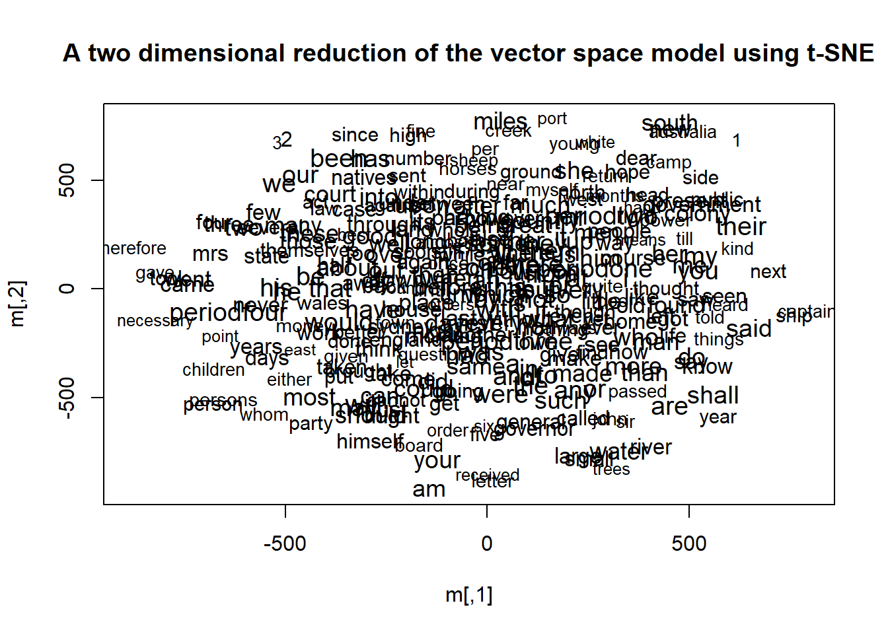
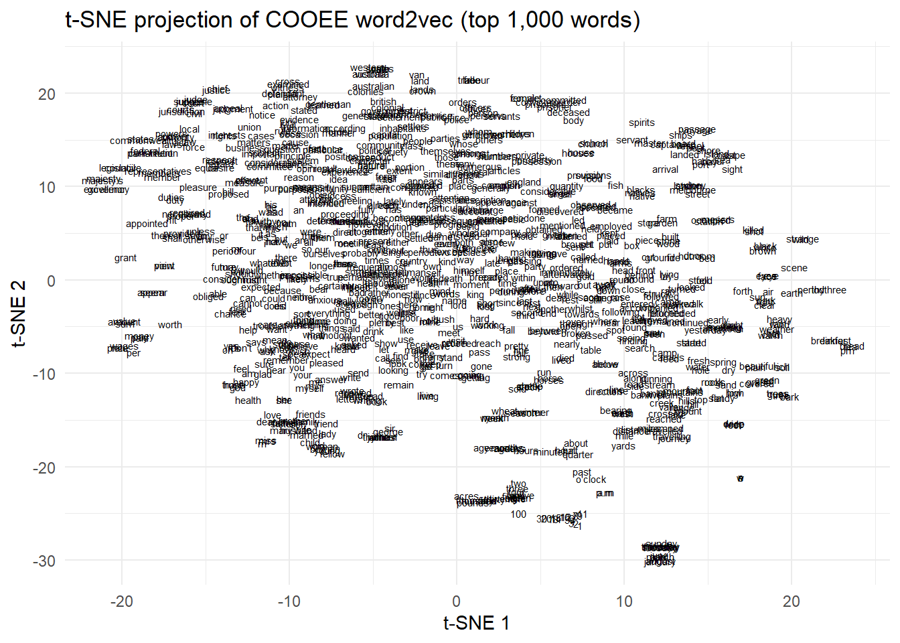

Conceptual maps are a distributional semantics method that gives a bird’s-eye view of a large dataset. This showcase compares several different approaches to building and visualising conceptual maps from the same corpus, allowing us to assess what each method reveals — and what it obscures.
In this tutorial, we will:
Train a word2vec semantic space on the COOEE corpus (Australian historical letters)
Test the semantic space with nearest-neighbour queries
Build conceptual maps using six different layout methods:
t-SNE — non-linear dimensionality reduction (interactive via plotly)
igraph with Fruchterman-Reingold — force-directed graph layout
igraph with DRL — a scalable force-directed algorithm
ForceAtlas2 — an animated force-directed algorithm popular in Gephi
UMAP — non-linear dimensionality reduction with strong local structure
Textplot + GML — a pre-computed graph imported from an external tool
Related Tutorial
This showcase is a companion to the main Conceptual Maps tutorial, which introduces the core concepts. The focus here is on comparing methods: understanding what each layout algorithm reveals, and which works best for which purpose.
Prerequisite Tutorials
Before working through this tutorial, we recommend familiarity with:
Build a word–word cosine similarity matrix and convert it to an igraph object
Visualise a semantic network with six different layout algorithms
Critically compare the strengths and weaknesses of each layout method
Citation
Schneider, Gerold. 2026. Comparing Methods for Conceptual Maps. Brisbane: The Language Technology and Data Analysis Laboratory (LADAL). url: https://ladal.edu.au/tutorials/conceptualmaps_showcase2/conceptualmaps_showcase2.html (Version 2026.05.01).
The COOEE Corpus
Section Overview
What you will learn: What the COOEE corpus is; how to download it; and what the period labels embedded in the text mean
The COOEE corpus (Corpus of Oz Early English) consists of Australian English letters written between 1788 and 1900. It is an ideal corpus for exploring distributional semantics across historical periods because:
It is large enough to train a meaningful word2vec model (~10 MB of text)
It contains temporal labels embedded directly in the text, allowing semantic queries about specific periods
The content reflects the dramatic social changes of colonial Australia
The corpus has been prepared with period labels embedded in the running text as pseudo-words:
Label
Period
periodone
1788–1825
periodtwo
1826–1850
periodthree
1851–1875
periodfour
1875–1900
This means we can query closest_to(training, "periodone", 30) and receive the words most strongly associated with that historical period.
Downloading the corpus
Data File Required
The COOEE corpus file (ALL_byperiod_nomarkup.txt) must be present in tutorials/conceptualmaps_showcase2/data/ before running any of the code in this tutorial. Download it using the code below on first use.
Code
# Create the data folder if it does not existdir.create("tutorials/conceptualmaps_showcase2/data", recursive =TRUE, showWarnings =FALSE)# Download the COOEE corpus (run once)download.file(url ="https://ladal.edu.au/tutorials/conceptualmaps_showcase2/data/ALL_byperiod_nomarkup.txt",destfile ="tutorials/conceptualmaps_showcase2/data/ALL_byperiod_nomarkup.txt",mode ="wb")
Code
# Path to the corpus file — adjust if your project structure differscorpus_file <-"tutorials/conceptualmaps_showcase2/data/ALL_byperiod_nomarkup.txt"
Setup
Installing packages
GitHub-only packages and igraph compatibility
wordVectors and ForceAtlas2 are not on CRAN — install both from GitHub using remotes.
ForceAtlas2 uses igraph::get.adjacency() internally, which was deprecated in igraph ≥ 1.3 (replaced by as_adjacency_matrix()). This may produce deprecation warnings on recent igraph versions but should still run. If you encounter errors in the ForceAtlas2 sections, check the ForceAtlas2 GitHub issues for a patched version.
Code
# CRAN packagesinstall.packages(c("igraph", # graph construction and layout algorithms"tidyverse", # data manipulation"tidytext", # stopword lists"ggplot2", # plotting"ggrepel", # non-overlapping text labels"reshape2", # data reshaping"Rtsne", # t-SNE dimensionality reduction"plotly", # interactive plots"htmlwidgets", # save interactive HTML widgets"scales", # rescaling values"tsne", # t-SNE dimensionality reduction"uwot"# UMAP dimensionality reduction))# GitHub-only packagesremotes::install_github("bmschmidt/wordVectors")remotes::install_github("analyxcompany/ForceAtlas2")
What you will learn: How to use wordVectors to prepare and train a word2vec model; the effect of window size on the resulting semantic space; and how to load a pre-trained model to avoid re-training
The word2vec algorithm learns a vector representation for every word in the corpus such that words appearing in similar contexts receive similar vectors. The key hyperparameter is the window size: how many words on either side of the target word are considered context. Larger windows capture deeper, more topical semantics; smaller windows capture more syntactic and collocational relationships.
Preparing the corpus
The prep_word2vec() function tokenises and lowercases the raw text, producing a cleaned version ready for training:
Training with window size 10 takes approximately 4 minutes. Run this block once and then load the saved .bin file instead. The force = TRUE argument overwrites any existing model.
What you will learn: How to query nearest neighbours in a word2vec model; and what the COOEE semantic space reveals about the vocabulary of early Australian English
The closest_to() function returns the words most similar to a query term according to cosine similarity in the vector space. These results give us a way to sanity-check the model before building maps. The examples here come from a run with window size 10.
The first settlers were convicts. A mutiny during transport was the greatest danger for the captain and the midshipman; surgeons were stretched. The word female is more surprising — it appears because frequent phrases like “male and female convicts” make female a near-neighbour of convict, even with a small window.
Dear is primarily used to address recipients and to formally express affection.
Code
closest_to(training, "england", 30)
word similarity to "england"
1 england 1.0000
2 scotland 0.6161
3 ireland 0.5342
4 europe 0.5143
5 india 0.5073
6 america 0.5014
7 persecuted 0.4921
8 dublin 0.4871
9 canada 0.4834
10 china 0.4811
11 practising 0.4762
12 usury 0.4732
13 superior 0.4704
14 sailed 0.4688
15 prohibiting 0.4668
16 ecclesiastical 0.4665
17 arived 0.4648
18 canton 0.4622
19 law 0.4596
20 possesion 0.4588
21 realm 0.4571
22 practice 0.4570
23 pasage 0.4560
24 emigrating 0.4545
25 melburne 0.4507
26 id 0.4498
27 colony 0.4483
28 france 0.4462
29 superintendents 0.4461
30 e.g 0.4451
The associations of england include expected relatives such as scotland, but also colony and sailed — reflecting the long sea voyage that separated the colonists from home.
Code
closest_to(training, "australia", 30)
word similarity to "australia"
1 australia 1.0000
2 queensland 0.6362
3 victoria 0.6284
4 tasmania 0.6251
5 felix 0.6077
6 western 0.6053
7 south 0.5782
8 new 0.5768
9 3ft 0.5681
10 federated 0.5636
11 australian 0.5437
12 wales 0.5313
13 provinces 0.5266
14 colonies 0.5249
15 6in 0.5178
16 comers 0.5168
17 republic 0.5165
18 australasia 0.5117
19 factor 0.5010
20 262 0.5000
21 dobson 0.4996
22 coastal 0.4995
23 statesmanship 0.4967
24 development 0.4937
25 hampered 0.4877
26 dutiable 0.4833
27 revival 0.4823
28 vicissitudes 0.4801
29 aims 0.4776
30 riverina 0.4756
One of the most interesting features of the COOEE corpus is its embedded period labels. Querying these pseudo-words reveals the dominant themes of each historical period.
Period 1 (1788–1825) — the earliest settlement period — returns years falling within the period, and names of people prominent in those years. For example, Frederick Garling (1775–1848) was one of the first solicitors admitted in Australia (Wikipedia).
Period 3 (1851–1875) — the gold rush era and expansion inland. Person names dominate; to see what is distinctive about this period compared to others, we would need to dig deeper.
Period 4 (1875–1900) is foreshadowing Australia’s federation. Among the top neighbours of periodfour we find federal, parliament, speaker and senator — the Australian Parliament was founded in 1901, and this historic event is already visible in the letters of the preceding decades.
Building the Similarity Matrix and Graph
Section Overview
What you will learn: How to construct a word–word cosine similarity matrix from a word2vec model; how to convert it to a long-form data frame; how to filter it; and how to build an igraph object that can be visualised with multiple layout algorithms
Selecting words
We take the 1,000 most frequent words in the model as our vocabulary for the maps. You can experiment with this number — 500 to 1,000 is a good range. More words make the graph richer but slower to compute and harder to read.
Code
word_list <-rownames(training)[1:1000]
Subsetting the model
Code
sub_model <- training[word_list, ]
Computing cosine similarities
We compute the full word–word cosine similarity matrix. This is a 1,000 × 1,000 matrix where every cell contains the cosine similarity between two words.
Code
similarity_matrix <-cosineSimilarity(sub_model, sub_model)# Inspect the top-left corner as a sanity checksimilarity_matrix[1:10, 1:10]
</s> the of and to a in i
</s> 1.000000 -0.0366 -0.006562 -0.1100 -0.06176 -0.05473 -0.0427 -0.1398
the -0.036596 1.0000 0.790839 0.7320 0.71015 0.63410 0.6673 0.3545
of -0.006562 0.7908 1.000000 0.7351 0.66821 0.64079 0.7199 0.3573
and -0.110042 0.7320 0.735118 1.0000 0.71805 0.66949 0.6813 0.4129
to -0.061757 0.7102 0.668206 0.7181 1.00000 0.60771 0.6446 0.4831
a -0.054734 0.6341 0.640791 0.6695 0.60771 1.00000 0.6355 0.4638
in -0.042702 0.6673 0.719920 0.6813 0.64460 0.63548 1.0000 0.4817
i -0.139783 0.3545 0.357320 0.4129 0.48305 0.46378 0.4817 1.0000
that -0.042504 0.6078 0.589197 0.5820 0.64871 0.54304 0.6369 0.4895
it -0.157327 0.4795 0.453252 0.5000 0.54882 0.54533 0.5415 0.5685
that it
</s> -0.0425 -0.1573
the 0.6078 0.4795
of 0.5892 0.4533
and 0.5820 0.5000
to 0.6487 0.5488
a 0.5430 0.5453
in 0.6369 0.5415
i 0.4895 0.5685
that 1.0000 0.6852
it 0.6852 1.0000
Saving the matrix
It is good practice to save this intermediate result so you can reload it without recomputing:
word1 word2 similarity
1 </s> </s> 1.000000
2 the </s> -0.036596
3 of </s> -0.006562
4 and </s> -0.110042
5 to </s> -0.061757
6 a </s> -0.054734
Filtering
We apply three filters:
Remove stopwords (using the tidytext stopword list)
Remove very short words (3 characters or fewer)
Keep only pairs with cosine similarity above 0.25, excluding self-similarities
Code
# Use quanteda's stopword list as a fallback — avoids tidytext data dependencyeng_stopwords <- quanteda::stopwords("english")# Remove stopwordssimilarity_df <- similarity_df |>filter(!word1 %in% eng_stopwords,!word2 %in% eng_stopwords )# Remove short wordssimilarity_df <- similarity_df |>filter(nchar(as.character(word1)) >3,nchar(as.character(word2)) >3 )# Keep only strong similarities, exclude self-pairssimilarity_df <-subset( similarity_df, similarity >0.25& word1 != word2)# Inspect top 50 most similar pairssimilarity_df |>arrange(desc(similarity)) |>head(50)
word1 word2 similarity
1 west north 0.8775
2 north west 0.8775
3 east north 0.8673
4 north east 0.8673
5 defendant plaintiff 0.8556
6 plaintiff defendant 0.8556
7 east west 0.8483
8 west east 0.8483
9 tuesday friday 0.8427
10 friday tuesday 0.8427
11 saturday monday 0.8328
12 monday saturday 0.8328
13 thursday friday 0.8306
14 friday thursday 0.8306
15 friday monday 0.8197
16 monday friday 0.8197
17 winter summer 0.8085
18 summer winter 0.8085
19 thursday tuesday 0.8045
20 tuesday thursday 0.8045
21 thursday monday 0.8041
22 monday thursday 0.8041
23 supreme court 0.7983
24 court supreme 0.7983
25 tuesday monday 0.7982
26 monday tuesday 0.7982
27 legislative council 0.7979
28 council legislative 0.7979
29 fifty hundred 0.7898
30 hundred fifty 0.7898
31 thousand hundred 0.7882
32 hundred thousand 0.7882
33 four three 0.7845
34 three four 0.7845
35 wales south 0.7842
36 south wales 0.7842
37 friday saturday 0.7838
38 saturday friday 0.7838
39 july april 0.7802
40 april july 0.7802
41 five four 0.7736
42 four five 0.7736
43 thursday saturday 0.7726
44 saturday thursday 0.7726
45 april march 0.7717
46 march april 0.7717
47 seven eight 0.7691
48 eight seven 0.7691
49 july june 0.7681
50 june july 0.7681
Similarity Threshold
Setting the threshold above 0.5 will cause the graph to split into disconnected sub-graphs, losing the global structure that makes the maps interpretable. A threshold between 0.2 and 0.35 works well for COOEE with 1,000 words.
Building the igraph object
We now have everything we need to build an igraph object. We also add a label attribute (for compatibility with Gephi and Graphia) and a weight attribute (for layout algorithms that use it):
Code
g <-graph_from_data_frame(similarity_df, directed =FALSE)g2 <- g # keep a copy of the original before we modify g# Add label attribute (igraph default node name is "name")V(g)$label <-V(g)$name# Add weight attribute (expected by Gephi, Graphia, and some igraph layouts)E(g)$weight <-E(g)$similarity# Sanity checkhead(V(g))
+ 6/777 vertices, named, from 7dd65ec:
[1] periodfour periodone last north west camp
Code
head(E(g))
+ 6/77408 edges from 7dd65ec (vertex names):
[1] periodfour--periodthree periodone --periodthree last --periodthree
[4] north --periodthree west --periodthree camp --periodthree
Exporting the graph
Exporting to GraphML/GML allows you to import the graph into Gephi or Graphia for further exploration:
What you will learn: How to apply t-SNE dimensionality reduction to the word2vec matrix; how to create an interactive plotly version; and what t-SNE reveals well (local cluster structure) and what it distorts (global distances)
The t-SNE algorithm (t-distributed Stochastic Neighbour Embedding) maps the high-dimensional word vectors to two dimensions while trying to preserve local neighbourhood structure. It is a non-linear mapping, capturing more variation than a single PCA projection.
A quick overview plot using the wordVectors built-in:
Code
plot(training)

For a more flexible and readable version, we apply Rtsne directly and label the points with ggplot2:
Code
termsize <-1000# number of terms to includemytsne <-Rtsne(training[1:termsize, ])tsne_plot <- mytsne$Y |>as.data.frame() |>mutate(word =rownames(training)[1:termsize]) |>ggplot(aes(x = V1, y = V2, label = word)) +geom_text(size =2) +labs(title ="t-SNE projection of COOEE word2vec (top 1,000 words)",x ="t-SNE 1", y ="t-SNE 2") +theme_minimal()plot(tsne_plot)

The static plot is dense. For better exploration, use the interactive plotly version where you can zoom and hover:
The t-SNE graph reveals many semantically tight clusters: officers and officer, mile and miles, husband/wife/married, weather/warm/hot/wind. Thematic clusters include law (justice, judgement, jurisdiction, case, shall, duties), early settlement (periodone, king, settled, prisoner, charged, murder), and daily life (bread, tea, drink, hut, fire, house, garden, school, church).
Notably, natives and blacks overlap in the t-SNE space, indicating that these words were used as near-synonyms in the corpus — a finding with significant historical implications.
Limitation: t-SNE excels at preserving local cluster structure but distorts global distances. The positions of periodone, periodtwo, etc. relative to each other in this map are not reliable indicators of their semantic relationship.
Method TWO: igraph with Fruchterman-Reingold
Section Overview
What you will learn: How to apply the Fruchterman-Reingold force-directed layout to the similarity graph; the effect of edge weight rescaling on the layout; and how to export publication-quality PDFs
The Fruchterman-Reingold algorithm is a force-directed layout that treats edges as springs and nodes as repelling charges. Strongly similar words (high-weight edges) are pulled together; all words push each other apart. This gives a physically intuitive layout.
The period labels now appear in distinct regions of the map. periodone is more central and surrounded by king, murder, and prisoner — reflecting the convict-dominated early settlement. periodtwo is characterised by family themes: mother, brother, sister, husband, child, and common names like John, Mary, and George. periodthree has months, weekdays, weather, and travel words — the Australians are exploring their new country. periodfour begins to show political vocabulary.
Rescaled weights
The raw cosine similarities (0–1) produce a narrow weight range. Rescaling to a wider range (1–100 or 1–10,000) increases the contrast between strong and weak similarities, often producing a cleaner layout:
# Optional: export to PDF for high-resolution viewingpdf("tutorials/conceptualmaps_showcase2/data/semantic_network_FR.pdf", width =20, height =20)set.seed(1)plot.igraph( g,layout =layout_with_fr(g, weights =E(g)$w_scaled, niter =2000),vertex.size =0,vertex.label.cex =0.7,edge.width =E(g)$similarity /5,main ="Word Similarity Network — FR, weights rescaled to 1–100")dev.off()
Method THREE: igraph with DRL
Section Overview
What you will learn: How to apply the DrL (Distributed Recursive Layout) algorithm, which is designed for large graphs; and how rescaling weights to a very wide range (1–10,000) affects DRL results
The DrL (Distributed Recursive Layout) algorithm (martin2011openord?) is designed for graphs with thousands or tens of thousands of nodes. It partitions the graph recursively and applies a force-directed algorithm at each level. It can handle larger graphs than Fruchterman-Reingold, but typically needs wider weight ranges to work well.
Fruchterman-Reingold tends to produce rounder, more balanced layouts. DRL tends to produce more elongated, clustered layouts that can reveal global separation between topic clusters more clearly. For COOEE at 1,000 words, both are viable — try both and compare.
Method FOUR: ForceAtlas2
Section Overview
What you will learn: How to apply the ForceAtlas2 algorithm — the default layout in Gephi — in R; why we use the unmodified copy g2 rather than the modified g; and what ForceAtlas2 reveals about the global structure of the COOEE semantic space
ForceAtlas2 is the default layout algorithm in Gephi. It is well suited for semantic networks because it is designed to produce layouts where global structure (inter-cluster distances) is meaningful. The layout.forceatlas2() function in the ForceAtlas2 R package animates the layout as it evolves; use plotstep to control how often an intermediate plot is displayed.
Use the Unmodified Copy g2
We have added scaled weight attributes to g in earlier sections. These can interfere with ForceAtlas2. We therefore use g2, the unmodified copy saved before any attribute additions.
Code
set.seed(1)fa2_layout <-layout.forceatlas2( g2,iterations =4000,plotstep =1000, # show a plot every 1000 iterationsdirected =FALSE)
ForceAtlas2 reveals clear global trends: periodone clusters near king, ship, and prisoner. periodtwo is close to home, school, death, and married — the new Australians are coping with their new home and writing anxiously about their family. periodthree features expeditions in the new wilderness: journey, months, and logbook-like vocabulary. periodfour shows increasing political awareness: constitution, law, federal, and matters become prominent.
ForceAtlas2 is particularly good at showing this kind of global temporal structure — arguably better than FR or DRL for this corpus.
Running Outside RStudio
ForceAtlas2 is designed to show the graph constantly updating as it takes shape. Running it outside a code block (directly in the R console) displays a sequence of plots that is much more informative than a single static output. You can then zoom the final plot in the Plots tab and export to PDF from there.
Method FIVE: UMAP
Section Overview
What you will learn: How to apply UMAP (Uniform Manifold Approximation and Projection) to the word2vec matrix; how the n_neighbors parameter controls the balance between local and global structure; and why UMAP excels at local detail but cannot reliably map global distances
UMAP(mcinnes2018umap?) is a non-linear dimensionality reduction method that has become very popular as a faster and often more flexible alternative to t-SNE. The key parameter is n_neighbors: smaller values preserve fine-grained local structure; larger values preserve more of the global topology.
Code
set.seed(1)umap_result <-umap( sub_model,n_neighbors =500, # large value → more global structuremin_dist =0.2, # cluster tightnessn_components =2,metric ="euclidean")plot( umap_result[, 1], umap_result[, 2],pch =1,col ="white",xlab ="UMAP 1",ylab ="UMAP 2",main ="UMAP projection of COOEE word2vec (top 1,000 words)")text( umap_result[, 1], umap_result[, 2],labels =rownames(sub_model),cex =0.7)
UMAP is very accurate in local detail: person names, months, numbers, and other semantically tight groups cluster together correctly. However, the placement of the period labels (periodone, periodtwo, etc.) relative to each other looks almost arbitrary. This reflects a well-known property of UMAP: it is superior for local neighbourhood structure but cannot reliably represent global distances between clusters. For questions about the relative positions of major thematic groups, ForceAtlas2 or Fruchterman-Reingold are more appropriate.
Method SIX: Graph from Textplot (GML Import)
Section Overview
What you will learn: How to import a pre-computed GML graph file into R; how to apply igraph and ForceAtlas2 layouts to an externally generated graph; and how the textplot tool differs from the word2vec approach used above
External Tool Required
This section uses a .gml file generated by the textplot command-line tool (McClure 2015, GitHub). The GML file for COOEE is available for download:
A legal cluster is visible at the top of the map, with court, defendant, and judge. periodone is near captain, boat, ship, and convicts. Periods 2, 3, and 4 are relatively close to each other, near family relations (sister, father, brother) and affection (love).
Visualising with ForceAtlas2
When loading a .gml file from textplot, node names are stored in the label attribute rather than igraph’s default name. We need to copy label to name before using ForceAtlas2:
We have now built conceptual maps of the COOEE corpus using six different methods. Here is a summary of their strengths and weaknesses for this type of task:
Method
Local detail
Global structure
Speed
Interactivity
t-SNE
⭐⭐⭐
⭐
Medium
✓ via plotly
igraph FR
⭐⭐
⭐⭐
Fast
—
igraph DRL
⭐⭐
⭐⭐
Fast
—
ForceAtlas2
⭐⭐
⭐⭐⭐
Slow
Animated
UMAP
⭐⭐⭐
⭐
Fast
—
Textplot + FA2
⭐⭐
⭐⭐⭐
Slow
—
Key findings from comparing the methods:
t-SNE and UMAP excel at revealing tight local clusters (synonyms, near-synonyms, semantic categories) but their global layouts are not reliable — do not read meaning into the distances between major clusters.
Fruchterman-Reingold and DRL provide a reasonable balance between local and global structure. Rescaling the edge weights (to 1–100 or 1–10,000) has a substantial effect on the layout quality.
ForceAtlas2 produces the most interpretable global layout for this corpus, clearly separating the four historical periods and placing them near their most characteristic vocabulary.
Textplot + ForceAtlas2 produces very similar results to the word2vec + ForceAtlas2 approach, suggesting that the layout algorithm matters more than the specific edge-weighting method, at least for this corpus.
There is no single best method. The choice depends on the research question: use t-SNE or UMAP to explore fine-grained semantic categories; use ForceAtlas2 or Fruchterman-Reingold to understand global thematic organisation.
Final Comments
As Tangherlini and Leonard (2013) argue in the context of topic modelling, computational methods offer a division of labour: the algorithm handles counting and similarity computation, while the researcher applies domain expertise to interpret the output. Conceptual maps are a particularly powerful illustration of this: they make the latent structure of a large corpus visible at a glance, but the interpretation of what the clusters mean — and what the distances between them imply — always requires human judgement.
The comparison of methods presented here also reinforces a broader methodological lesson: the same underlying data can look very different depending on how it is projected into two dimensions. Before drawing conclusions from any conceptual map, it is worth asking: does this layout algorithm preserve local structure, global structure, or both? Is the placement of nodes determined by the data, or partly by the algorithm’s own biases?
Citation & Session Info
Schneider, Gerold. 2026. Comparing Methods for Conceptual Maps. Brisbane: The Language Technology and Data Analysis Laboratory (LADAL). url: https://ladal.edu.au/tutorials/conceptualmaps_showcase2/conceptualmaps_showcase2.html (Version 2026.05.01).
@manual{schneider2026conceptualmaps_showcase2,
author = {Schneider, Gerold},
title = {Comparing Methods for Conceptual Maps},
note = {tutorials/conceptualmaps_showcase2/conceptualmaps_showcase2.html},
year = {2026},
organization = {The University of Queensland, Australia. School of Languages and Cultures},
address = {Brisbane},
edition = {2026.05.01}
}
AI Transparency Statement
This tutorial was adapted for LADAL by Martin Schweinberger with the assistance of Claude (claude.ai), a large language model created by Anthropic. The original tutorial was authored by Gerold Schneider (2026). The adaptation involved converting the document to Quarto format; fixing the YAML (which was malformed in the original); removing getwd()/list.files() diagnostic chunks; replacing all hardcoded absolute paths with portable relative paths; removing all PDF-iframe embed patterns and replacing them with inline R plot output; adding LADAL-style section overviews, learning objectives, a prerequisite callout, and a method comparison table; adding PDF export blocks with eval=FALSE; consolidating duplicate UMAP plot blocks; adding set.seed(1) to the UMAP block for reproducibility; and adding the GML download block so the textplot section can be run without access to external tools. All scientific content, interpretation, and code logic are the work of the original author.
Tangherlini, Timothy R, and Peter Leonard. 2013. “Trawling in the Sea of the Great Unread: Sub-Corpus Topic Modeling and Humanities Research.”Poetics 41 (6): 725–49. https://doi.org/https://doi.org/10.1016/j.poetic.2013.08.002.
Source Code
---title: "Comparing Methods for Conceptual Maps"author: "Gerold Schneider"format: html: toc: true toc-depth: 4 code-fold: show code-tools: true theme: cosmo---```{r setup, echo=FALSE, message=FALSE, warning=FALSE}options(stringsAsFactors = FALSE)options("scipen" = 100, "digits" = 4)```{ width=100% }# Introduction {#intro}Conceptual maps are a distributional semantics method that gives a bird's-eye view of a large dataset. This showcase compares several different approaches to building and visualising conceptual maps from the same corpus, allowing us to assess what each method reveals — and what it obscures.In this tutorial, we will:1. Train a word2vec semantic space on the COOEE corpus (Australian historical letters)2. Test the semantic space with nearest-neighbour queries3. Build conceptual maps using six different layout methods: - **t-SNE** — non-linear dimensionality reduction (interactive via plotly) - **igraph with Fruchterman-Reingold** — force-directed graph layout - **igraph with DRL** — a scalable force-directed algorithm - **ForceAtlas2** — an animated force-directed algorithm popular in Gephi - **UMAP** — non-linear dimensionality reduction with strong local structure - **Textplot + GML** — a pre-computed graph imported from an external tool::: {.callout-note}## Related TutorialThis showcase is a companion to the main [Conceptual Maps tutorial](/tutorials/conceptualmaps_showcase2/conceptualmaps_showcase2.html), which introduces the core concepts. The focus here is on **comparing methods**: understanding what each layout algorithm reveals, and which works best for which purpose.:::::: {.callout-note}## Prerequisite TutorialsBefore working through this tutorial, we recommend familiarity with:- [Getting Started with R](/tutorials/intror/intror.html) — R basics- [Word Embeddings and Vector Semantics](/tutorials/embeddings/embeddings.html) — how word2vec works- [Network Analysis](/tutorials/net/net.html) — igraph basics:::::: {.callout-note}## Learning ObjectivesBy the end of this tutorial you will be able to:1. Train and load a word2vec model using `wordVectors`2. Query nearest neighbours in a semantic space3. Build a word–word cosine similarity matrix and convert it to an igraph object4. Visualise a semantic network with six different layout algorithms5. Critically compare the strengths and weaknesses of each layout method:::::: {.callout-note}## CitationSchneider, Gerold. 2026. *Comparing Methods for Conceptual Maps*. Brisbane: The Language Technology and Data Analysis Laboratory (LADAL). url: https://ladal.edu.au/tutorials/conceptualmaps_showcase2/conceptualmaps_showcase2.html (Version 2026.05.01).:::---# The COOEE Corpus {#cooee}::: {.callout-note}## Section Overview**What you will learn:** What the COOEE corpus is; how to download it; and what the period labels embedded in the text mean:::The **COOEE corpus** (Corpus of Oz Early English) consists of Australian English letters written between 1788 and 1900. It is an ideal corpus for exploring distributional semantics across historical periods because:- It is large enough to train a meaningful word2vec model (~10 MB of text)- It contains temporal labels embedded directly in the text, allowing semantic queries about specific periods- The content reflects the dramatic social changes of colonial AustraliaThe corpus has been prepared with period labels embedded in the running text as pseudo-words:| Label | Period ||---|---|| `periodone` | 1788–1825 || `periodtwo` | 1826–1850 || `periodthree` | 1851–1875 || `periodfour` | 1875–1900 |This means we can query `closest_to(training, "periodone", 30)` and receive the words most strongly associated with that historical period.## Downloading the corpus {-}::: {.callout-warning}## Data File RequiredThe COOEE corpus file (`ALL_byperiod_nomarkup.txt`) must be present in `tutorials/conceptualmaps_showcase2/data/` before running any of the code in this tutorial. Download it using the code below on first use.:::```{r download-cooee, eval=FALSE, message=FALSE, warning=FALSE}# Create the data folder if it does not existdir.create("tutorials/conceptualmaps_showcase2/data", recursive = TRUE, showWarnings = FALSE)# Download the COOEE corpus (run once)download.file( url = "https://ladal.edu.au/tutorials/conceptualmaps_showcase2/data/ALL_byperiod_nomarkup.txt", destfile = "tutorials/conceptualmaps_showcase2/data/ALL_byperiod_nomarkup.txt", mode = "wb")``````{r set-data-path, message=FALSE, warning=FALSE}# Path to the corpus file — adjust if your project structure differscorpus_file <- "tutorials/conceptualmaps_showcase2/data/ALL_byperiod_nomarkup.txt"```---# Setup {#setup}## Installing packages {-}::: {.callout-warning}## GitHub-only packages and igraph compatibility`wordVectors` and `ForceAtlas2` are not on CRAN — install both from GitHub using `remotes`.`ForceAtlas2` uses `igraph::get.adjacency()` internally, which was deprecated in igraph ≥ 1.3 (replaced by `as_adjacency_matrix()`). This may produce deprecation warnings on recent igraph versions but should still run. If you encounter errors in the ForceAtlas2 sections, check the [ForceAtlas2 GitHub issues](https://github.com/analyxcompany/ForceAtlas2/issues) for a patched version.:::```{r install, eval=FALSE, message=FALSE, warning=FALSE}# CRAN packagesinstall.packages(c( "igraph", # graph construction and layout algorithms "tidyverse", # data manipulation "tidytext", # stopword lists "ggplot2", # plotting "ggrepel", # non-overlapping text labels "reshape2", # data reshaping "Rtsne", # t-SNE dimensionality reduction "plotly", # interactive plots "htmlwidgets", # save interactive HTML widgets "scales", # rescaling values "tsne", # t-SNE dimensionality reduction "uwot" # UMAP dimensionality reduction))# GitHub-only packagesremotes::install_github("bmschmidt/wordVectors")remotes::install_github("analyxcompany/ForceAtlas2")```## Loading packages {-}```{r load-pkgs, message=FALSE, warning=FALSE}library(igraph)library(tidyverse)library(tidytext)library(ggplot2)library(ggrepel)library(reshape2)library(Rtsne)library(plotly)library(htmlwidgets)library(scales)library(uwot)library(wordVectors)library(ForceAtlas2)```---# Training the Semantic Space {#train}::: {.callout-note}## Section Overview**What you will learn:** How to use `wordVectors` to prepare and train a word2vec model; the effect of window size on the resulting semantic space; and how to load a pre-trained model to avoid re-training:::The word2vec algorithm learns a vector representation for every word in the corpus such that words appearing in similar contexts receive similar vectors. The key hyperparameter is the **window size**: how many words on either side of the target word are considered context. Larger windows capture deeper, more topical semantics; smaller windows capture more syntactic and collocational relationships.## Preparing the corpus {-}The `prep_word2vec()` function tokenises and lowercases the raw text, producing a cleaned version ready for training:```{r prep-corpus, eval=FALSE, message=FALSE, warning=FALSE}prep_word2vec( origin = corpus_file, destination = "tutorials/conceptualmaps_showcase2/data/ALL_byperiod_nomarkup_out.txt", lowercase = TRUE)```## Training (run once) {-}::: {.callout-warning}## Training Takes TimeTraining with window size 10 takes approximately 4 minutes. Run this block once and then load the saved `.bin` file instead. The `force = TRUE` argument overwrites any existing model.:::```{r train-word2vec, eval=FALSE, message=FALSE, warning=FALSE}# Window size 10 — recommended default (4 minutes)training <- train_word2vec( train_file = "tutorials/conceptualmaps_showcase2/data/ALL_byperiod_nomarkup_out.txt", output_file = "tutorials/conceptualmaps_showcase2/data/ALL_byperiod_nomarkup_w10.bin", threads = 4, vectors = 200, window = 10, force = TRUE)# Uncomment to try larger windows (slower, deeper semantics):# window 20 (~10 min):# training <- train_word2vec(..., output_file = "...w20.bin", window = 20)# window 50 (~20 min):# training <- train_word2vec(..., output_file = "...w50.bin", window = 50)```## Loading the trained model {-}After training once, always load the saved `.bin` file directly:```{r load-model, message=FALSE, warning=FALSE}# Load pre-trained model (fast — no re-training)model_file <- "tutorials/conceptualmaps_showcase2/data/ALL_byperiod_nomarkup_w10.bin"training <- read.binary.vectors( filename = model_file, nrows = Inf, cols = "All", rowname_list = NULL, rowname_regexp = NULL)```---# Testing the Semantic Space {#test}::: {.callout-note}## Section Overview**What you will learn:** How to query nearest neighbours in a word2vec model; and what the COOEE semantic space reveals about the vocabulary of early Australian English:::The `closest_to()` function returns the words most similar to a query term according to cosine similarity in the vector space. These results give us a way to sanity-check the model before building maps. The examples here come from a run with window size 10.## Content words {-}```{r test-convict, message=FALSE, warning=FALSE}closest_to(training, "convict", 30)```The first settlers were convicts. A mutiny during transport was the greatest danger for the captain and the midshipman; surgeons were stretched. The word *female* is more surprising — it appears because frequent phrases like "male and female convicts" make *female* a near-neighbour of *convict*, even with a small window.```{r test-letter, message=FALSE, warning=FALSE}closest_to(training, "letter", 30)```COOEE is a corpus of letters; this query shows what *letter* is associated with — delivery, postage, and the act of writing and receiving.```{r test-dear, message=FALSE, warning=FALSE}closest_to(training, "dear", 30)```*Dear* is primarily used to address recipients and to formally express affection.```{r test-england, message=FALSE, warning=FALSE}closest_to(training, "england", 30)```The associations of *england* include expected relatives such as *scotland*, but also *colony* and *sailed* — reflecting the long sea voyage that separated the colonists from home.```{r test-australia, message=FALSE, warning=FALSE}closest_to(training, "australia", 30)``````{r test-government, message=FALSE, warning=FALSE}closest_to(training, "government", 30)```## Period labels {-}One of the most interesting features of the COOEE corpus is its embedded period labels. Querying these pseudo-words reveals the dominant themes of each historical period.```{r test-period1, message=FALSE, warning=FALSE}closest_to(training, "periodone", 30)```Period 1 (1788–1825) — the earliest settlement period — returns years falling within the period, and names of people prominent in those years. For example, Frederick Garling (1775–1848) was one of the first solicitors admitted in Australia ([Wikipedia](https://en.wikipedia.org/wiki/Frederick_Garling)).```{r test-period2, message=FALSE, warning=FALSE}closest_to(training, "periodtwo", 30)```Period 2 (1826–1850) again returns years and personal names, reflecting the continued growth of the colony and its social structures.```{r test-period3, message=FALSE, warning=FALSE}closest_to(training, "periodthree", 30)```Period 3 (1851–1875) — the gold rush era and expansion inland. Person names dominate; to see what is distinctive about this period compared to others, we would need to dig deeper.```{r test-period4, message=FALSE, warning=FALSE}closest_to(training, "periodfour", 30)```Period 4 (1875–1900) is foreshadowing Australia's federation. Among the top neighbours of *periodfour* we find *federal*, *parliament*, *speaker* and *senator* — the Australian Parliament was founded in 1901, and this historic event is already visible in the letters of the preceding decades.---# Building the Similarity Matrix and Graph {#matrix}::: {.callout-note}## Section Overview**What you will learn:** How to construct a word–word cosine similarity matrix from a word2vec model; how to convert it to a long-form data frame; how to filter it; and how to build an igraph object that can be visualised with multiple layout algorithms:::## Selecting words {-}We take the 1,000 most frequent words in the model as our vocabulary for the maps. You can experiment with this number — 500 to 1,000 is a good range. More words make the graph richer but slower to compute and harder to read.```{r word-list, message=FALSE, warning=FALSE}word_list <- rownames(training)[1:1000]```## Subsetting the model {-}```{r subset-model, message=FALSE, warning=FALSE}sub_model <- training[word_list, ]```## Computing cosine similarities {-}We compute the full word–word cosine similarity matrix. This is a 1,000 × 1,000 matrix where every cell contains the cosine similarity between two words.```{r cosine-matrix, message=FALSE, warning=FALSE}similarity_matrix <- cosineSimilarity(sub_model, sub_model)# Inspect the top-left corner as a sanity checksimilarity_matrix[1:10, 1:10]```## Saving the matrix {-}It is good practice to save this intermediate result so you can reload it without recomputing:```{r save-matrix, eval=FALSE, message=FALSE, warning=FALSE}write.csv( as.data.frame(similarity_matrix), "tutorials/conceptualmaps_showcase2/data/word_similarity_matrix_top1000_w10.csv")```## Converting to long form {-}Graph tools and `igraph` expect an edge list (long form) rather than a square matrix. We convert using `as.table()`:```{r long-form, message=FALSE, warning=FALSE}similarity_df <- as.data.frame(as.table(similarity_matrix))colnames(similarity_df) <- c("word1", "word2", "similarity")head(similarity_df)```## Filtering {-}We apply three filters:1. Remove stopwords (using the `tidytext` stopword list)2. Remove very short words (3 characters or fewer)3. Keep only pairs with cosine similarity above 0.25, excluding self-similarities```{r filter-matrix, message=FALSE, warning=FALSE}# Use quanteda's stopword list as a fallback — avoids tidytext data dependencyeng_stopwords <- quanteda::stopwords("english")# Remove stopwordssimilarity_df <- similarity_df |> filter( !word1 %in% eng_stopwords, !word2 %in% eng_stopwords )# Remove short wordssimilarity_df <- similarity_df |> filter( nchar(as.character(word1)) > 3, nchar(as.character(word2)) > 3 )# Keep only strong similarities, exclude self-pairssimilarity_df <- subset( similarity_df, similarity > 0.25 & word1 != word2)# Inspect top 50 most similar pairssimilarity_df |> arrange(desc(similarity)) |> head(50)```::: {.callout-tip}## Similarity ThresholdSetting the threshold above 0.5 will cause the graph to split into disconnected sub-graphs, losing the global structure that makes the maps interpretable. A threshold between 0.2 and 0.35 works well for COOEE with 1,000 words.:::## Building the igraph object {-}We now have everything we need to build an igraph object. We also add a `label` attribute (for compatibility with Gephi and Graphia) and a `weight` attribute (for layout algorithms that use it):```{r build-graph, message=FALSE, warning=FALSE}g <- graph_from_data_frame(similarity_df, directed = FALSE)g2 <- g # keep a copy of the original before we modify g# Add label attribute (igraph default node name is "name")V(g)$label <- V(g)$name# Add weight attribute (expected by Gephi, Graphia, and some igraph layouts)E(g)$weight <- E(g)$similarity# Sanity checkhead(V(g))head(E(g))```## Exporting the graph {-}Exporting to GraphML/GML allows you to import the graph into Gephi or Graphia for further exploration:```{r export-graph, eval=FALSE, message=FALSE, warning=FALSE}write_graph( g, "tutorials/conceptualmaps_showcase2/data/COOEE_w10_simgt0.25.gml", format = "gml")```---# Method ONE: t-SNE Overview {#tsne}::: {.callout-note}## Section Overview**What you will learn:** How to apply t-SNE dimensionality reduction to the word2vec matrix; how to create an interactive plotly version; and what t-SNE reveals well (local cluster structure) and what it distorts (global distances):::The **t-SNE** algorithm (t-distributed Stochastic Neighbour Embedding) maps the high-dimensional word vectors to two dimensions while trying to preserve local neighbourhood structure. It is a non-linear mapping, capturing more variation than a single PCA projection.A quick overview plot using the `wordVectors` built-in:```{r tsne-quick, message=FALSE, warning=FALSE}plot(training)```For a more flexible and readable version, we apply `Rtsne` directly and label the points with `ggplot2`:```{r tsne-ggplot, message=FALSE, warning=FALSE}termsize <- 1000 # number of terms to includemytsne <- Rtsne(training[1:termsize, ])tsne_plot <- mytsne$Y |> as.data.frame() |> mutate(word = rownames(training)[1:termsize]) |> ggplot(aes(x = V1, y = V2, label = word)) + geom_text(size = 2) + labs(title = "t-SNE projection of COOEE word2vec (top 1,000 words)", x = "t-SNE 1", y = "t-SNE 2") + theme_minimal()plot(tsne_plot)```The static plot is dense. For better exploration, use the interactive plotly version where you can zoom and hover:```{r tsne-interactive, message=FALSE, warning=FALSE}# Build plotly directly — avoids the ggplotly conversion errortsne_df <- mytsne$Y |> as.data.frame() |> mutate(word = rownames(training)[1:termsize])plot_ly( data = tsne_df, x = ~V1, y = ~V2, text = ~word, type = "scatter", mode = "text", textfont = list(size = 9)) |> layout( title = "t-SNE projection of COOEE word2vec (top 1,000 words)", xaxis = list(title = "t-SNE 1"), yaxis = list(title = "t-SNE 2") )``````{r tsne-save, eval=FALSE, message=FALSE, warning=FALSE}# Save as standalone HTMLtsne_interactive <- plot_ly( data = tsne_df, x = ~V1, y = ~V2, text = ~word, type = "scatter", mode = "text", textfont = list(size = 9)) |> layout( title = "t-SNE projection of COOEE word2vec (top 1,000 words)", xaxis = list(title = "t-SNE 1"), yaxis = list(title = "t-SNE 2") )saveWidget( widget = tsne_interactive, file = "tutorials/conceptmaps2/data/tsne_cooee.html")```::: {.callout-note}## Interpreting the t-SNE MapThe t-SNE graph reveals many semantically tight clusters: *officers* and *officer*, *mile* and *miles*, *husband/wife/married*, *weather/warm/hot/wind*. Thematic clusters include law (*justice*, *judgement*, *jurisdiction*, *case*, *shall*, *duties*), early settlement (*periodone*, *king*, *settled*, *prisoner*, *charged*, *murder*), and daily life (*bread*, *tea*, *drink*, *hut*, *fire*, *house*, *garden*, *school*, *church*).Notably, *natives* and *blacks* overlap in the t-SNE space, indicating that these words were used as near-synonyms in the corpus — a finding with significant historical implications.**Limitation:** t-SNE excels at preserving local cluster structure but distorts global distances. The positions of *periodone*, *periodtwo*, etc. relative to each other in this map are **not** reliable indicators of their semantic relationship.:::---# Method TWO: igraph with Fruchterman-Reingold {#fr}::: {.callout-note}## Section Overview**What you will learn:** How to apply the Fruchterman-Reingold force-directed layout to the similarity graph; the effect of edge weight rescaling on the layout; and how to export publication-quality PDFs:::The **Fruchterman-Reingold** algorithm is a force-directed layout that treats edges as springs and nodes as repelling charges. Strongly similar words (high-weight edges) are pulled together; all words push each other apart. This gives a physically intuitive layout.## Basic layout {-}```{r fr-basic, fig.dim=c(10, 10), message=FALSE, warning=FALSE}set.seed(1)plot.igraph( g, vertex.size = 0, vertex.label.cex = 0.5, weights = E(g)$similarity, edge.width = E(g)$similarity / 5, main = "Word Similarity Network — Fruchterman-Reingold")```## With explicit weight parameter {-}Passing `weights` explicitly to `layout_with_fr()` ensures the edge weights actually influence the layout (this is not always the default):```{r fr-weighted, fig.dim=c(12, 12), message=FALSE, warning=FALSE}set.seed(1)plot.igraph( g, layout = layout_with_fr(g, weights = E(g)$weight), vertex.size = 0, vertex.label.cex = 0.7, edge.width = E(g)$similarity / 10, main = "Word Similarity Network — FR with weights")```::: {.callout-note}## Interpreting the FR MapThe period labels now appear in distinct regions of the map. *periodone* is more central and surrounded by *king*, *murder*, and *prisoner* — reflecting the convict-dominated early settlement. *periodtwo* is characterised by family themes: *mother*, *brother*, *sister*, *husband*, *child*, and common names like *John*, *Mary*, and *George*. *periodthree* has months, weekdays, weather, and travel words — the Australians are exploring their new country. *periodfour* begins to show political vocabulary.:::## Rescaled weights {-}The raw cosine similarities (0–1) produce a narrow weight range. Rescaling to a wider range (1–100 or 1–10,000) increases the contrast between strong and weak similarities, often producing a cleaner layout:```{r fr-rescaled, fig.dim=c(12, 12), message=FALSE, warning=FALSE}E(g)$w_scaled <- scales::rescale(E(g)$weight, to = c(1, 100))set.seed(1)plot.igraph( g, layout = layout_with_fr(g, weights = E(g)$w_scaled, niter = 2000), vertex.size = 0, vertex.label.cex = 0.7, edge.width = E(g)$similarity / 5, main = "Word Similarity Network — FR, weights rescaled to 1–100")``````{r fr-pdf, eval=FALSE, message=FALSE, warning=FALSE}# Optional: export to PDF for high-resolution viewingpdf("tutorials/conceptualmaps_showcase2/data/semantic_network_FR.pdf", width = 20, height = 20)set.seed(1)plot.igraph( g, layout = layout_with_fr(g, weights = E(g)$w_scaled, niter = 2000), vertex.size = 0, vertex.label.cex = 0.7, edge.width = E(g)$similarity / 5, main = "Word Similarity Network — FR, weights rescaled to 1–100")dev.off()```---# Method THREE: igraph with DRL {#drl}::: {.callout-note}## Section Overview**What you will learn:** How to apply the DrL (Distributed Recursive Layout) algorithm, which is designed for large graphs; and how rescaling weights to a very wide range (1–10,000) affects DRL results:::The **DrL** (Distributed Recursive Layout) algorithm [@martin2011openord] is designed for graphs with thousands or tens of thousands of nodes. It partitions the graph recursively and applies a force-directed algorithm at each level. It can handle larger graphs than Fruchterman-Reingold, but typically needs wider weight ranges to work well.```{r drl, fig.dim=c(12, 12), message=FALSE, warning=FALSE}E(g)$w_scaled_drl <- scales::rescale(E(g)$weight, to = c(1, 10000))set.seed(1)plot.igraph( g, layout = layout_with_drl(g, weights = E(g)$w_scaled_drl), vertex.size = 0, vertex.label.cex = 0.7, edge.width = E(g)$similarity / 20, main = "Word Similarity Network — DRL, weights rescaled to 1–10,000")``````{r drl-pdf, eval=FALSE, message=FALSE, warning=FALSE}pdf("tutorials/conceptualmaps_showcase2/data/semantic_network_DRL.pdf", width = 20, height = 20)set.seed(1)plot.igraph( g, layout = layout_with_drl(g, weights = E(g)$w_scaled_drl), vertex.size = 0, vertex.label.cex = 0.7, edge.width = E(g)$similarity / 20, main = "Word Similarity Network — DRL, weights rescaled to 1–10,000")dev.off()```::: {.callout-note}## FR vs DRLFruchterman-Reingold tends to produce rounder, more balanced layouts. DRL tends to produce more elongated, clustered layouts that can reveal global separation between topic clusters more clearly. For COOEE at 1,000 words, both are viable — try both and compare.:::---# Method FOUR: ForceAtlas2 {#fa2}::: {.callout-note}## Section Overview**What you will learn:** How to apply the ForceAtlas2 algorithm — the default layout in Gephi — in R; why we use the unmodified copy `g2` rather than the modified `g`; and what ForceAtlas2 reveals about the global structure of the COOEE semantic space:::**ForceAtlas2** is the default layout algorithm in Gephi. It is well suited for semantic networks because it is designed to produce layouts where global structure (inter-cluster distances) is meaningful. The `layout.forceatlas2()` function in the `ForceAtlas2` R package animates the layout as it evolves; use `plotstep` to control how often an intermediate plot is displayed.::: {.callout-warning}## Use the Unmodified Copy g2We have added scaled weight attributes to `g` in earlier sections. These can interfere with ForceAtlas2. We therefore use `g2`, the unmodified copy saved before any attribute additions.:::```{r fa2-layout, message=FALSE, warning=FALSE}set.seed(1)fa2_layout <- layout.forceatlas2( g2, iterations = 4000, plotstep = 1000, # show a plot every 1000 iterations directed = FALSE)``````{r fa2-plot, fig.dim=c(12, 12), message=FALSE, warning=FALSE}set.seed(1)plot.igraph( g2, layout = fa2_layout, vertex.size = 0, vertex.label.cex = 0.6, edge.width = E(g2)$similarity / 10, main = "Word Similarity Network — ForceAtlas2")``````{r fa2-pdf, eval=FALSE, message=FALSE, warning=FALSE}pdf("tutorials/conceptualmaps_showcase2/data/semantic_network_ForceAtlas2.pdf", width = 20, height = 20)set.seed(1)plot.igraph( g2, layout = fa2_layout, vertex.size = 0, vertex.label.cex = 0.6, edge.width = E(g2)$similarity / 10, main = "Word Similarity Network — ForceAtlas2")dev.off()```::: {.callout-note}## Interpreting the ForceAtlas2 MapForceAtlas2 reveals clear global trends: *periodone* clusters near *king*, *ship*, and *prisoner*. *periodtwo* is close to *home*, *school*, *death*, and *married* — the new Australians are coping with their new home and writing anxiously about their family. *periodthree* features expeditions in the new wilderness: *journey*, months, and logbook-like vocabulary. *periodfour* shows increasing political awareness: *constitution*, *law*, *federal*, and *matters* become prominent.ForceAtlas2 is particularly good at showing this kind of global temporal structure — arguably better than FR or DRL for this corpus.:::::: {.callout-tip}## Running Outside RStudioForceAtlas2 is designed to show the graph constantly updating as it takes shape. Running it outside a code block (directly in the R console) displays a sequence of plots that is much more informative than a single static output. You can then zoom the final plot in the Plots tab and export to PDF from there.:::---# Method FIVE: UMAP {#umap}::: {.callout-note}## Section Overview**What you will learn:** How to apply UMAP (Uniform Manifold Approximation and Projection) to the word2vec matrix; how the `n_neighbors` parameter controls the balance between local and global structure; and why UMAP excels at local detail but cannot reliably map global distances:::**UMAP** [@mcinnes2018umap] is a non-linear dimensionality reduction method that has become very popular as a faster and often more flexible alternative to t-SNE. The key parameter is `n_neighbors`: smaller values preserve fine-grained local structure; larger values preserve more of the global topology.```{r umap-plot, fig.dim=c(12, 12), message=FALSE, warning=FALSE}set.seed(1)umap_result <- umap( sub_model, n_neighbors = 500, # large value → more global structure min_dist = 0.2, # cluster tightness n_components = 2, metric = "euclidean")plot( umap_result[, 1], umap_result[, 2], pch = 1, col = "white", xlab = "UMAP 1", ylab = "UMAP 2", main = "UMAP projection of COOEE word2vec (top 1,000 words)")text( umap_result[, 1], umap_result[, 2], labels = rownames(sub_model), cex = 0.7)``````{r umap-pdf, eval=FALSE, message=FALSE, warning=FALSE}pdf("tutorials/conceptualmaps_showcase2/data/semantic_network_UMAP.pdf", width = 15, height = 15)set.seed(1)umap_result <- umap(sub_model, n_neighbors = 500, min_dist = 0.2, n_components = 2, metric = "euclidean")plot(umap_result[, 1], umap_result[, 2], pch = 1, col = "white", xlab = "UMAP 1", ylab = "UMAP 2", main = "UMAP projection")text(umap_result[, 1], umap_result[, 2], labels = rownames(sub_model), cex = 0.7)dev.off()```::: {.callout-note}## Interpreting the UMAP MapUMAP is very accurate in local detail: person names, months, numbers, and other semantically tight groups cluster together correctly. However, the placement of the period labels (*periodone*, *periodtwo*, etc.) relative to each other looks almost arbitrary. This reflects a well-known property of UMAP: it is superior for **local** neighbourhood structure but cannot reliably represent **global** distances between clusters. For questions about the relative positions of major thematic groups, ForceAtlas2 or Fruchterman-Reingold are more appropriate.:::---# Method SIX: Graph from Textplot (GML Import) {#textplot}::: {.callout-note}## Section Overview**What you will learn:** How to import a pre-computed GML graph file into R; how to apply igraph and ForceAtlas2 layouts to an externally generated graph; and how the textplot tool differs from the word2vec approach used above:::::: {.callout-warning}## External Tool RequiredThis section uses a `.gml` file generated by the `textplot` command-line tool (McClure 2015, [GitHub](https://github.com/davidmcclure/textplot)). The GML file for COOEE is available for download:```{r download-gml, eval=FALSE, message=FALSE, warning=FALSE}download.file( url = "https://ladal.edu.au/tutorials/conceptualmaps_showcase2/data/ALL_byperiod_momarkup3_t400-s10.gml", destfile = "tutorials/conceptualmaps_showcase2/data/ALL_byperiod_momarkup3_t400-s10.gml", mode = "wb")```The file was generated with the following command (for reference only):```textplot generate --term_depth 400 --skim_depth 10 --bandwidth 30000 \ ALL_byperiod_nomarkup.txt ALL_byperiod_momarkup3_t400-s10.gml```:::## Loading the GML file {-}```{r load-gml, message=FALSE, warning=FALSE}gml_file <- "tutorials/conceptualmaps_showcase2/data/ALL_byperiod_momarkup3_t400-s10.gml"g_tp <- read_graph(gml_file, format = "gml")```## Visualising with Fruchterman-Reingold {-}```{r textplot-fr, fig.dim=c(12, 12), message=FALSE, warning=FALSE}set.seed(1)plot.igraph( g_tp, layout = layout_with_fr(g_tp, weights = E(g_tp)$weight), vertex.size = 0, vertex.label.cex = 0.8, edge.width = E(g_tp)$similarity / 5, main = "Textplot Graph — Fruchterman-Reingold")```::: {.callout-note}## Interpreting the Textplot FR MapA legal cluster is visible at the top of the map, with *court*, *defendant*, and *judge*. *periodone* is near *captain*, *boat*, *ship*, and *convicts*. Periods 2, 3, and 4 are relatively close to each other, near family relations (*sister*, *father*, *brother*) and affection (*love*).:::## Visualising with ForceAtlas2 {-}When loading a `.gml` file from textplot, node names are stored in the `label` attribute rather than igraph's default `name`. We need to copy `label` to `name` before using ForceAtlas2:```{r textplot-fa2, fig.dim=c(12, 12), message=FALSE, warning=FALSE}V(g_tp)$name <- V(g_tp)$labelset.seed(1)fa2_layout_tp <- layout.forceatlas2( g_tp, iterations = 5000, plotstep = 500, directed = FALSE, gravity = 0.8, k = 10000, ks = 5, delta = 1)plot.igraph( g_tp, layout = fa2_layout_tp, vertex.size = 0, vertex.label.cex = 0.6, edge.width = E(g_tp)$weight / 10, main = "Textplot Graph — ForceAtlas2")``````{r textplot-fa2-pdf, eval=FALSE, message=FALSE, warning=FALSE}pdf("tutorials/conceptualmaps_showcase2/data/semantic_network_textplot_FA2.pdf", width = 20, height = 20)set.seed(1)plot.igraph(g_tp, layout = fa2_layout_tp, vertex.size = 0, vertex.label.cex = 0.6, edge.width = E(g_tp)$weight / 10, main = "Textplot Graph — ForceAtlas2")dev.off()```---# Comparing the Six Methods {#comparison}::: {.callout-note}## SummaryWe have now built conceptual maps of the COOEE corpus using six different methods. Here is a summary of their strengths and weaknesses for this type of task:| Method | Local detail | Global structure | Speed | Interactivity ||---|---|---|---|---|| t-SNE | ⭐⭐⭐ | ⭐ | Medium | ✓ via plotly || igraph FR | ⭐⭐ | ⭐⭐ | Fast | — || igraph DRL | ⭐⭐ | ⭐⭐ | Fast | — || ForceAtlas2 | ⭐⭐ | ⭐⭐⭐ | Slow | Animated || UMAP | ⭐⭐⭐ | ⭐ | Fast | — || Textplot + FA2 | ⭐⭐ | ⭐⭐⭐ | Slow | — |**Key findings from comparing the methods:**- **t-SNE and UMAP** excel at revealing tight local clusters (synonyms, near-synonyms, semantic categories) but their global layouts are not reliable — do not read meaning into the distances between major clusters.- **Fruchterman-Reingold and DRL** provide a reasonable balance between local and global structure. Rescaling the edge weights (to 1–100 or 1–10,000) has a substantial effect on the layout quality.- **ForceAtlas2** produces the most interpretable global layout for this corpus, clearly separating the four historical periods and placing them near their most characteristic vocabulary.- **Textplot + ForceAtlas2** produces very similar results to the word2vec + ForceAtlas2 approach, suggesting that the layout algorithm matters more than the specific edge-weighting method, at least for this corpus.There is no single best method. The choice depends on the research question: use t-SNE or UMAP to explore fine-grained semantic categories; use ForceAtlas2 or Fruchterman-Reingold to understand global thematic organisation.:::---# Final Comments {#conclusion}As @tangherlini2013trawling argue in the context of topic modelling, computational methods offer a division of labour: the algorithm handles counting and similarity computation, while the researcher applies domain expertise to interpret the output. Conceptual maps are a particularly powerful illustration of this: they make the latent structure of a large corpus visible at a glance, but the interpretation of what the clusters mean — and what the distances between them imply — always requires human judgement.The comparison of methods presented here also reinforces a broader methodological lesson: the same underlying data can look very different depending on how it is projected into two dimensions. Before drawing conclusions from any conceptual map, it is worth asking: does this layout algorithm preserve local structure, global structure, or both? Is the placement of nodes determined by the data, or partly by the algorithm's own biases?---# Citation & Session Info {-}Schneider, Gerold. 2026. *Comparing Methods for Conceptual Maps*. Brisbane: The Language Technology and Data Analysis Laboratory (LADAL). url: https://ladal.edu.au/tutorials/conceptualmaps_showcase2/conceptualmaps_showcase2.html (Version 2026.05.01).```@manual{schneider2026conceptualmaps_showcase2, author = {Schneider, Gerold}, title = {Comparing Methods for Conceptual Maps}, note = {tutorials/conceptualmaps_showcase2/conceptualmaps_showcase2.html}, year = {2026}, organization = {The University of Queensland, Australia. School of Languages and Cultures}, address = {Brisbane}, edition = {2026.05.01}}```::: {.callout-note}## AI Transparency StatementThis tutorial was adapted for LADAL by Martin Schweinberger with the assistance of **Claude** (claude.ai), a large language model created by Anthropic. The original tutorial was authored by Gerold Schneider (2026). The adaptation involved converting the document to Quarto format; fixing the YAML (which was malformed in the original); removing `getwd()`/`list.files()` diagnostic chunks; replacing all hardcoded absolute paths with portable relative paths; removing all PDF-iframe embed patterns and replacing them with inline R plot output; adding LADAL-style section overviews, learning objectives, a prerequisite callout, and a method comparison table; adding PDF export blocks with `eval=FALSE`; consolidating duplicate UMAP plot blocks; adding `set.seed(1)` to the UMAP block for reproducibility; and adding the GML download block so the textplot section can be run without access to external tools. All scientific content, interpretation, and code logic are the work of the original author.:::```{r fin}sessionInfo()```---[Back to top](#intro)[Back to LADAL home](/)---# References {-}